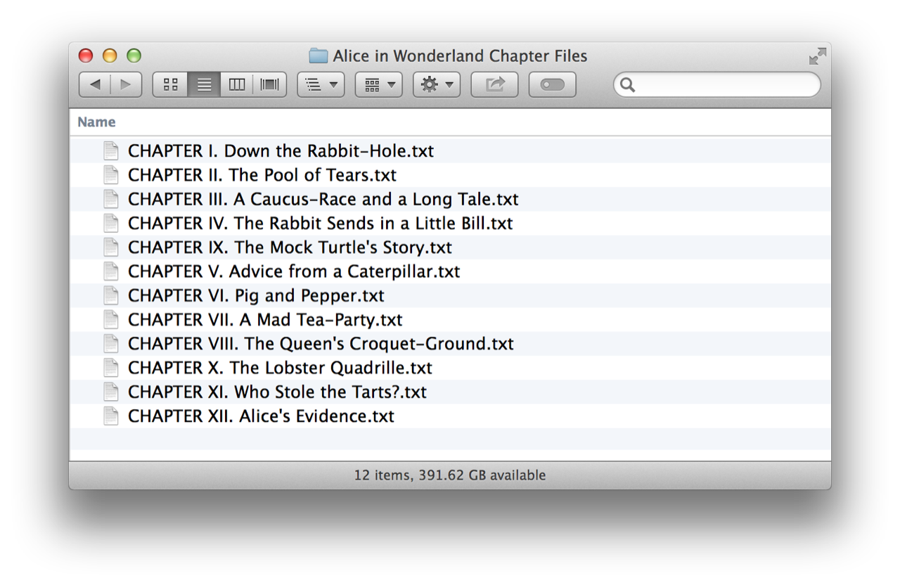
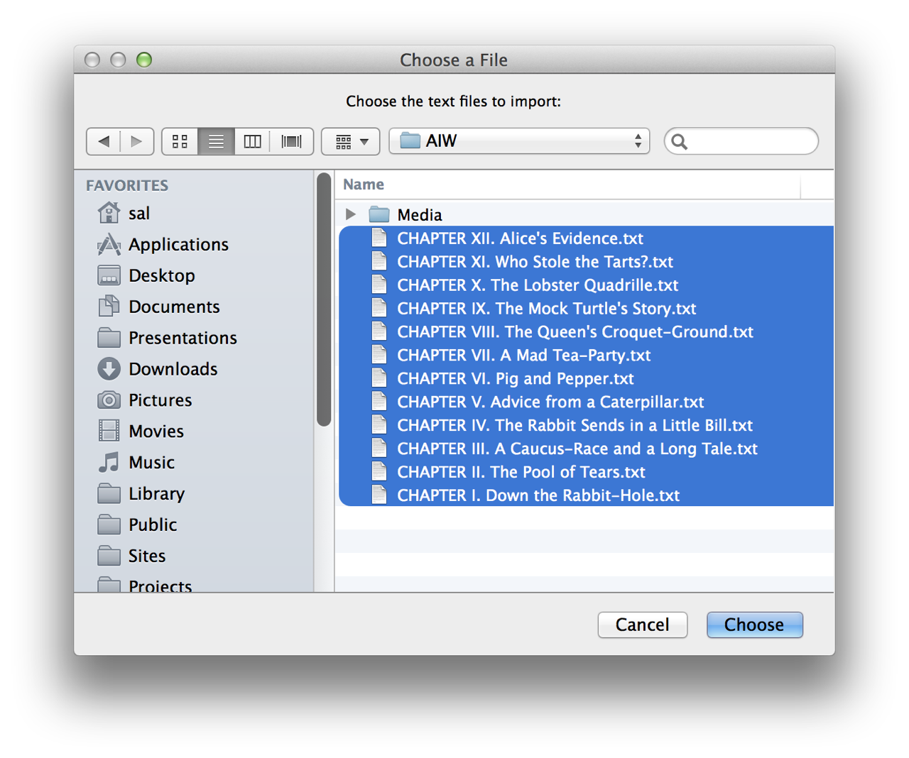
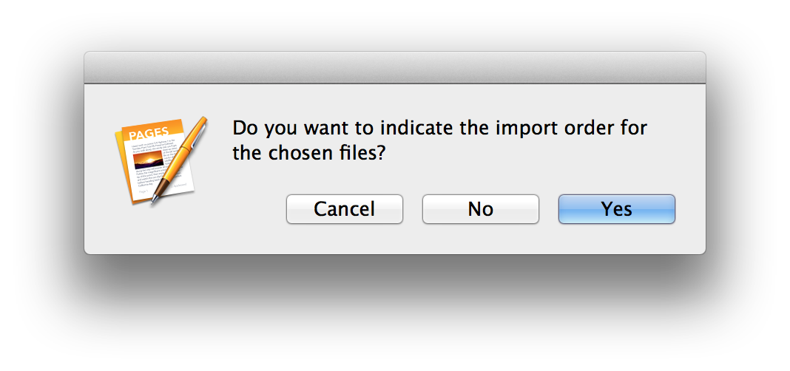
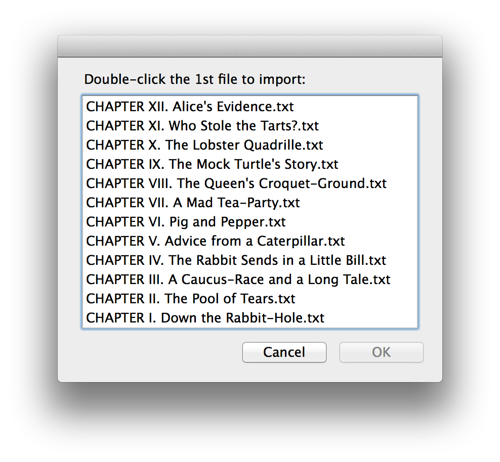

A fundamental benefit of automation is found in its ability to perform a series of intricate procedures over and over, quickly but with precision. Take for example the task of combining a dozen files, perhaps chapters of a book, into a single document, with the contents of each file occupying its own section in the new document. If done by hand, this process could take 15 minutes, but when done with a script, it takes only seconds. That’s why professionals rank automation as such a high priority.
As a demonstration, here’s an AppleScript script for importing a set of chosen text files into a new document, with each imported file flowing into its own section.
Follow these steps:
DO THIS ►DOWNLOAD a ZIP archive containing the text of Alice in Wonderland divided into group of individual chapter files.
(A special “thank you” to Project Gutenberg for making this content available to the public!)

DO THIS ►Open the script into the Script Editor application by clicking the button at the top of the script segment at the bottom of this page: (⬇ see below )
FYI: Click HERE for instructions on how to save scripts for use with the system-wide Script Menu.
DO THIS ►Run the script and a file chooser dialog will appear (⬇ see below ) Select the text files you wish to import and click the Choose button to continue:

DO THIS ►A second dialog is displayed (⬇ see below ) asking if you would like to manually indicate the import order for the selected files, or use the order displayed in the previous choosing dialog. For the purposes of this tutorial, click the Yes button.

DO THIS ►Since you indicated that a manual sort process was desired, a list dialog displaying the names of selected files, appears (⬇ see below )
Double-click the name of the first file to import (CHAPTER I. Down the Rabbit-Hole.txt). The list will reappear, prompting you to choose the second file to import (CHAPTER II. The Pool of Tears.txt). This process continues until you’ve indicated the import order for all of the files.
TIP: For those who can’t remember the Roman Numerals for 1 through 12, they are: I, II, III, IV, V, VI, VII, VIII, IX, X, XI, XII

The script will create a new blank document and import each of the chosen files into its own section. (⬇ see below )
Mention of third-party websites and products is for informational purposes only and constitutes neither an endorsement nor a recommendation. MACOSXAUTOMATION.COM assumes no responsibility with regard to the selection, performance or use of information or products found at third-party websites. MACOSXAUTOMATION.COM provides this only as a convenience to our users. MACOSXAUTOMATION.COM has not tested the information found on these sites and makes no representations regarding its accuracy or reliability. There are risks inherent in the use of any information or products found on the Internet, and MACOSXAUTOMATION.COM assumes no responsibility in this regard. Please understand that a third-party site is independent from MACOSXAUTOMATION.COM and that MACOSXAUTOMATION.COM has no control over the content on that website. Please contact the vendor for additional information.